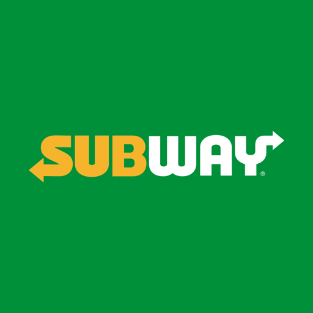
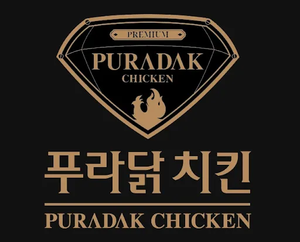
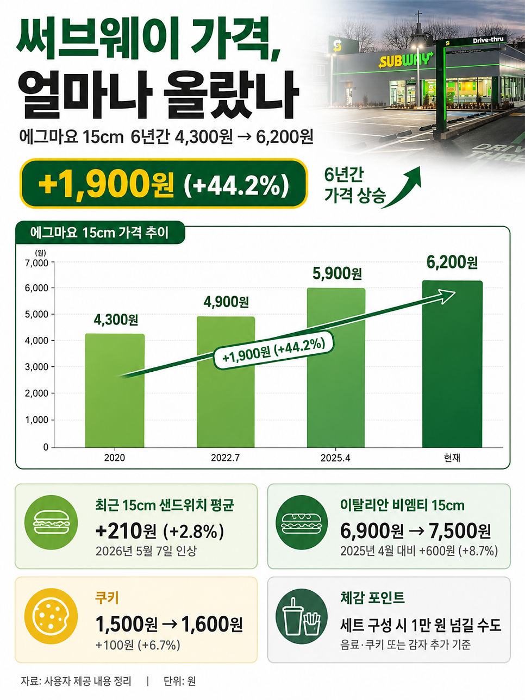
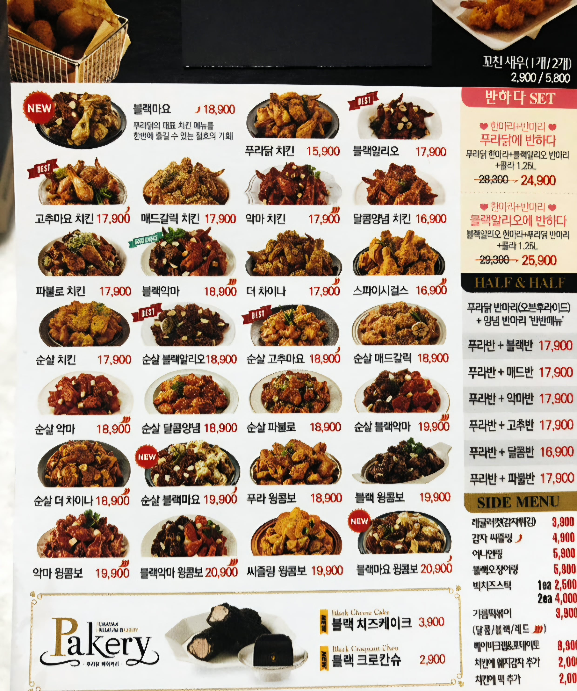
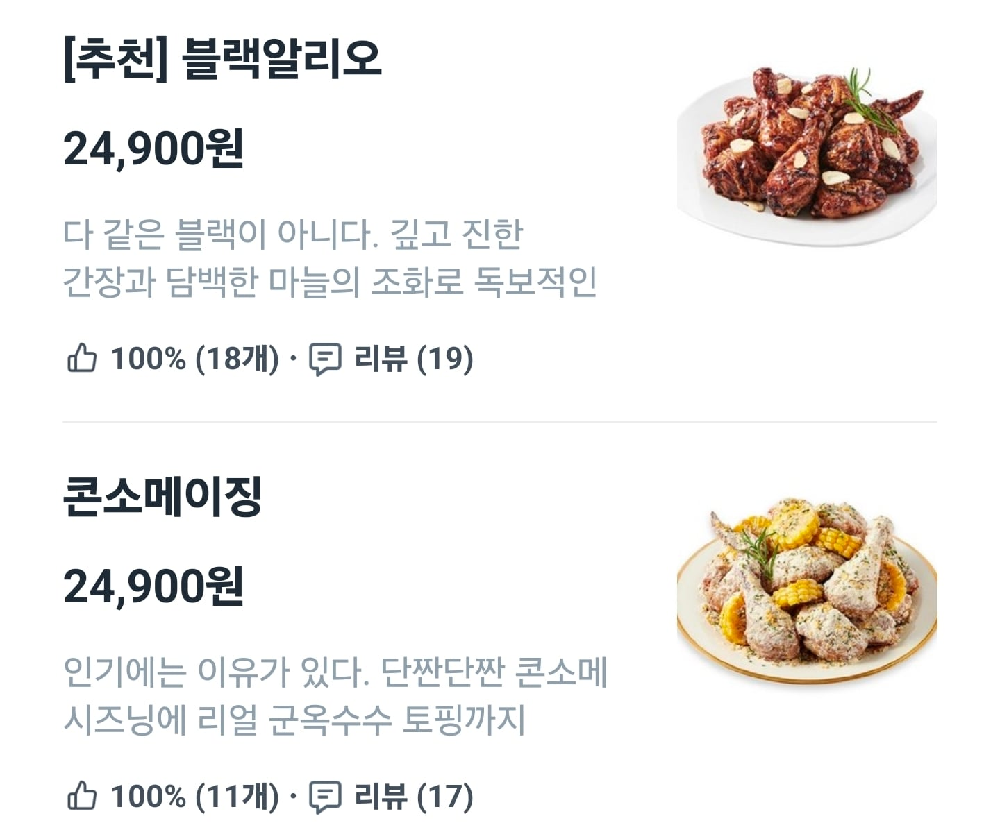
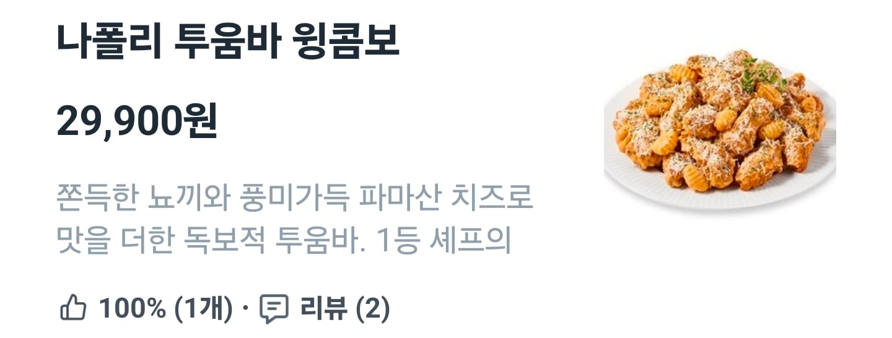
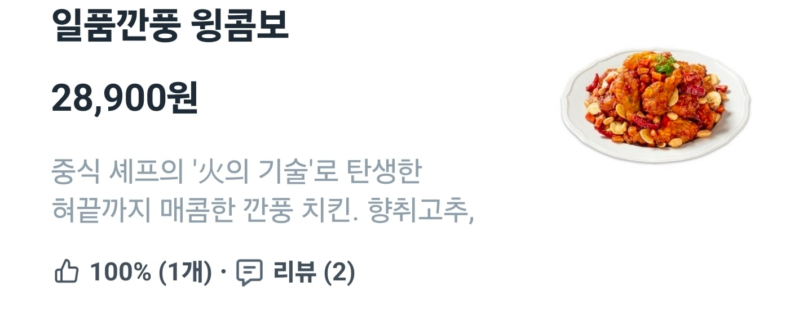

서브웨이 2년 마다 꾸준히 가꾸준히 가격 올림
20년도 푸라닭 가격표

현재 쿠팡, 배민 가격표



푸라닭은 콜라보 제품들을 내놓으면서 가격을 계속 높여왔음 이제 치킨 3만원 시대를 노리고 있는 프차임
둘다 욕을 덜 먹는건 앞에서 막아줄 탱커
맥도날드, 교촌 or BBQ가 있기 때문임
탱커들은 조금만 올려도
바로 뉴스 나오고 인터넷에서 욕먹지만
얘넨 비교적 비교적 조용함
근데 서브웨이랑 비슷한 종류의 샌드위치집을 가면 저렴한가? 하면 또 아님
어디에 비교해봐도 서브웨이가 그나마 가격이 나은편
서브웨이 대체할만한게 있긴함?